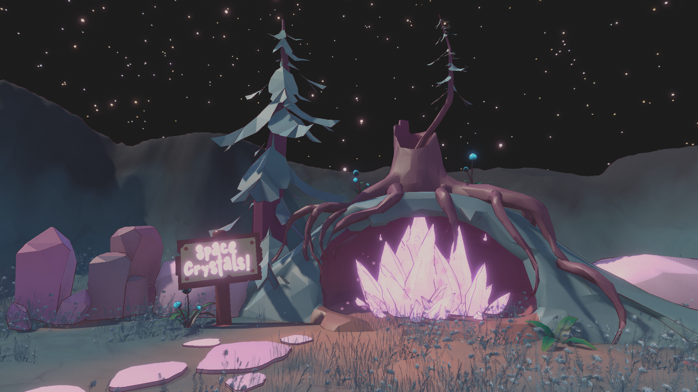

A UI accessibility prototype exploring visual and perceptual overload in game HUD design.
Visual Snow Syndrome (VSS) is a neurological perceptual condition where individuals experience persistent visual static, light sensitivity, and visual distortion effects.
This prototype explores how game HUD systems can be adapted to reduce perceptual overload and improve readability for affected users.
